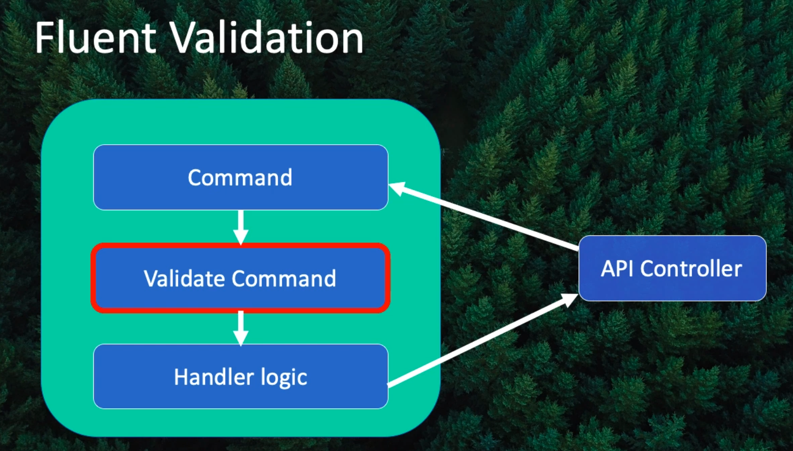

数据验证
通过对客户端请求数据的验证, 可以让服务端根据错误进行对应的响应, 比如返回 400 错误或其他的一些自定义错误内容.
主要包括:
- 使用注解对数据进行验证
- 使用 Fluent API 方式对数据进行验证
在本 APP 中主要使用第二种方式来进行数据验证, 即对 Command 的数据进行验证. 需要引入一个 Fluent Validation 包, 然后针对需要验证的数据设置验证规则, 如下图所示:

实现 Fluent 方式的数据验证
目前由于没有进行数据验证, 故后端 APP 在接收到任何请求后都会进行处理, 如果数据异常, 则直接会抛出异常. 比如发送一个空的 Activity 到服务端, 此时后端仍然会接收并处理这个请求, 并且把空的数据插入到数据库, 但这样的行为是不希望发生的.
在使用 MediatR 的时候, 就可以在比如 Command 和 Handler 之间, 添加一层 Validation 过程. 为此, 如要进行如下步骤:
- 添加 FluentValidation 包:
FluentValidation.AspNetCore 添加 Validation 子类:
public class CommandValidator : AbstractValidator<Command> { public CommandValidator() { RuleFor(x => x.Title).NotEmpty(); // 其他的验证... } }在服务中注入 Validator 依赖(在现有的
AddControllers方法后链上一个AddFluentValidation调用):services.AddControllers().AddFluentValidation(config => { // 框架会自动在包含指定类型的 Assembly 中寻找 AbstractValidator 子类. config.RegisterValidatorsFromAssemblyContaining<ActivityCreate>(); });